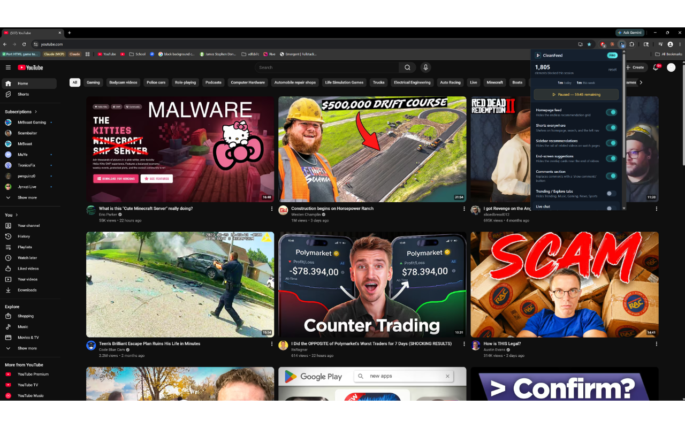

You finish watching a video, and just as it ends — sometimes before the speaker has stopped talking — the screen fills with floating thumbnails of other videos. Two big rectangles, maybe a circular "subscribe" badge, sliding into view over the last few seconds. That's an end screen, and it's one of the most effective attention traps YouTube has. You came to watch one thing; now you're staring at a grid of four more, and your hand is already drifting toward the mouse.
This guide explains what end screens are, why YouTube gives you no real setting to turn them off, and every method that reduces or removes them in 2026. I'll start with the free manual workarounds — honestly, they are workarounds, not a true off switch — before moving to extensions that delete the overlay completely. I built one of those extensions, so read that section with appropriate skepticism; I recommend a free tool first for most people.
What exactly is an end screen?
An "end screen" is a creator-configured overlay that appears during the final 5 to 20 seconds of a video. Creators add it inside YouTube Studio to point you at their other videos, a playlist, their subscribe button, or an external link. You'll see one to four interactive elements — usually a couple of suggested-video thumbnails plus a subscribe bubble, animating in over whatever is still playing.
People lump three related things together, so it's worth separating them:
- End screens (end cards): the clickable video and channel tiles that appear in the last ~20 seconds, placed by the creator. These cover part of the actual video frame.
- Cards (the "i" teasers): small pop-out tabs that appear mid-video in the top-right corner, also creator-placed, linking to other videos or polls.
- The "Up next" sidebar and post-playback wall: YouTube's own algorithmic recommendations beside the player, and the grid of suggestions that fills the player after a video finishes if autoplay is off.
This page is mostly about the first and third — the overlay that hijacks the final seconds, and the wall that replaces the video once it stops. Both exist to keep you clicking, and both are where most "just one video" sessions quietly become an hour.
Part 1: Manual methods — workarounds without an extension
These cost nothing and work in any browser. None truly removes the end screen, but each reduces how much it grabs you — damage control before you decide on an extension.
-
Stop the video a few seconds early
End screens only appear in the final stretch, so pause or close the tab before they load. When the video is clearly wrapping up — "thanks for watching," the music swells, the progress bar near the end — hit pause and the end cards never render. The downside is you have to babysit the timeline and you'll sometimes cut off a real outro. It's a habit, not a fix, but the most reliable manual method because it sidesteps the overlay entirely.
-
Use theater mode or fullscreen and look away
Switching to theater mode (the rectangle icon in the player bar) or fullscreen doesn't remove the end screen, but it changes how it sits. In fullscreen, the suggested-video grid still appears when the video ends — but pressing
Escor clicking back drops you out before you start clicking tiles. Some people pair this with simply looking away for the last few seconds. It's pure discipline, and it genuinely helps some viewers — but be honest: if a wall of thumbnails appears and you're still looking, you'll click one. -
Click into empty space, not the tiles
When the overlay appears, clicking the video frame anywhere that isn't a tile pauses or replays the video rather than sending you elsewhere. So aim for the dead space, or press the spacebar to pause, and you stay on the current page. It does nothing to hide the overlay — the tiles are still there — so it only works with the self-control to aim away from them. A guardrail, not a wall.
-
Turn off autoplay so you don't get launched into the next video
Autoplay and end screens are separate features that compound each other: with autoplay on, the end screen appears and a countdown pulls you into "Up next." Toggle autoplay off (the slider at the top of the sidebar) and you won't be carried automatically into another video while the end cards show. You'll still see the overlay, but the session won't continue without your input. Pairs well with the "stop early" habit above.
-
Try a custom content-blocker filter (fragile)
If you already run uBlock Origin or a similar content blocker, you can write a cosmetic filter to hide the end-screen elements — they live in DOM nodes with class names like
ytp-ce-elementandytp-endscreen-content. A rule to hide those can wipe the overlay. The catch is that it's brittle: every time YouTube renames its CSS classes the filter silently stops working, and you won't know until the end cards reappear. It's a clever stopgap for power users, not a maintained solution for everyone.
Part 2: Extension methods — remove end screens for good
Browser extensions strip elements out before they render, so the end-screen overlay and post-playback grid simply never appear. The good ones are fast, free or cheap, and survive YouTube's layout changes because their maintainers keep them updated. Here are four worth your time, with honest notes on where each fits.

-
Unhook — free, the gold standard
If you want the best free option and nothing else, install Unhook. It's open source, has more than 800,000 users, and includes dedicated toggles to hide end-screen cards, the in-video "i" cards/annotations, and the post-video suggestion wall — alongside switches for nearly every other distraction on YouTube. The free version handles end screens completely; the optional Pro tier adds extras you don't need for this. What Unhook deliberately lacks is any lock or commitment mechanism — every toggle is one click to switch back off. If your only problem is that end screens are visible, Unhook removes them for free and I recommend it without reservation.
-
CleanFeed — pay-once, adds a dedicated end-screen blocker plus Focus Lock
CleanFeed is for the person Unhook doesn't quite reach: the one who hides distractions, then re-enables them ten minutes later because the toggle is right there. It ships 17 individual blockers — including a specific end-screen suggestions blocker that removes the overlay, plus blockers for sidebar recommendations, autoplay, comments, the homepage feed, and more. Its real differentiator is Focus Lock: set a 4-digit PIN, turn your blockers on, and to disable any mid-session you hold a button for a full 60 seconds. The PIN is stored salted-SHA256, never in plaintext. There's a built-in Pomodoro timer (25/5 cycles) that auto-locks every blocker during a focus block, and a time tracker that only counts focused, visible YouTube tabs. It's $4.99 once — no subscription, no account, no telemetry — and the free tier keeps any 2 blockers on forever. It's new on the Chrome Web Store with a small day-one user base, so it hasn't earned Unhook's track record yet. Choose it for the lock, not just the hiding.
-
DF Tube (Distraction Free for YouTube) — lightweight and simple
DF Tube is the minimalist's pick. It hides distractions — the end-screen wall, sidebar recommendations, comments, the trending shelf — with a small set of toggles and a free tier (plus an optional paid upgrade). It has fewer controls than Unhook and no lock, but it's light, easy to understand, and gets the overlay off your screen in a couple of clicks. If Unhook feels like too many switches, DF Tube is the calmer alternative that still kills the suggestion grid.
-
BlockTube — free, if your real problem is specific channels
BlockTube is a different tool. Rather than toggling UI elements, it blocks content by rule — specific channels, title keywords, even regex filter lists. It won't strip the end-screen overlay as cleanly as Unhook or CleanFeed, but if the suggestions on those end cards are always the same channels or topics you want gone, BlockTube can blanket-block them so they never appear. Reach for it when the problem is what gets suggested, not that suggestions appear.
The screenshot above shows roughly what a watch page looks like once the end-screen overlay and sidebar suggestions are gone — CleanFeed's result, but Unhook and DF Tube produce a similarly quiet player.
Which method should you actually use?
If you only need this occasionally, the free habit is enough: turn autoplay off and pause the video a few seconds before it ends, before the end cards load. It costs nothing and removes the moment of temptation.
If you want end screens and the post-video wall gone automatically, with zero maintenance, install Unhook first — it's free, trusted by hundreds of thousands of users, and its end-screen and annotations toggles just work. Reach for DF Tube if you want something lighter, and BlockTube for specific channels. Only consider CleanFeed if you've already hidden these distractions and caught yourself switching them back on — the 60-second Focus Lock and Pomodoro auto-lock are the entire reason it exists, and the one thing the free tools deliberately don't do.
Frequently asked questions
Can I turn off end screens in YouTube settings?
No. End screens are added by the creator inside YouTube Studio and are part of the video itself, so there is no setting in your account to disable them. The manual methods on this page work around them — pausing early, turning off autoplay, clicking dead space — but none is an official off switch. To actually remove the overlay, you need a browser extension like Unhook or CleanFeed.
What's the difference between end screens and cards?
End screens (end cards) are the clickable video and subscribe tiles that fill the final 5–20 seconds. Cards are the small "i" teaser tabs that pop out top-right mid-video. Both are placed by the creator, and good extensions let you hide each independently. The "Up next" sidebar and post-playback grid are separate — those come from YouTube, not the creator.
Does blocking end screens break the video?
No. Removing the overlay and suggestion grid only hides the floating tiles over the last few seconds and the post-playback wall — the video, audio, captions, chapters, and description all play normally. You simply reach the end and nothing tries to fling you into the next video.
Do these extensions work on mobile?
On desktop browsers, yes — all of them run in Chrome and Chromium-based browsers. On phones, extensions generally don't run inside the official YouTube app, so your options there are the manual habits: turn autoplay off and stop videos before the end cards appear. Some mobile browsers that support extensions can run these on the YouTube website, but not in the native app.
Is it safe to give an extension access to YouTube?
The tools here are reputable, and Unhook, BlockTube, and CleanFeed are open source, so you can read exactly what they do. CleanFeed in particular runs entirely on your device with no account, no telemetry, and no data leaving your browser. Install from the official Chrome Web Store, review the permissions, and prefer extensions whose source is public.